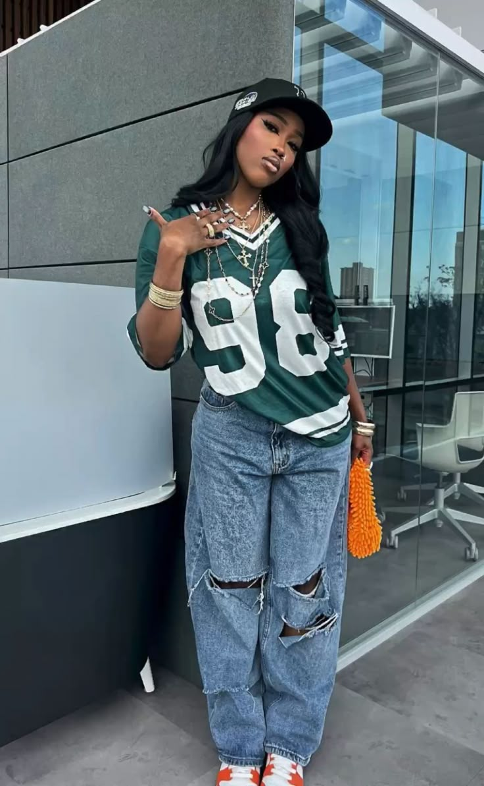

El Streetwear basa su éxito absoluto en la holgura de sus piezas y en la pesadez de sus materiales textiles. Las sudaderas con capucha mantienen estructuras rígidas que no pierden la forma, combinadas de manera perfecta con pantalones tipo cargo de múltiples bolsas utilitarias. Los accesorios pesados y los tenis de suelas altas complementan este look urbano.
A diferencia de otras corrientes, aquí la exclusividad no se mide por la formalidad de la prenda, sino por la rareza de sus lanzamientos en el mercado de la moda joven.
